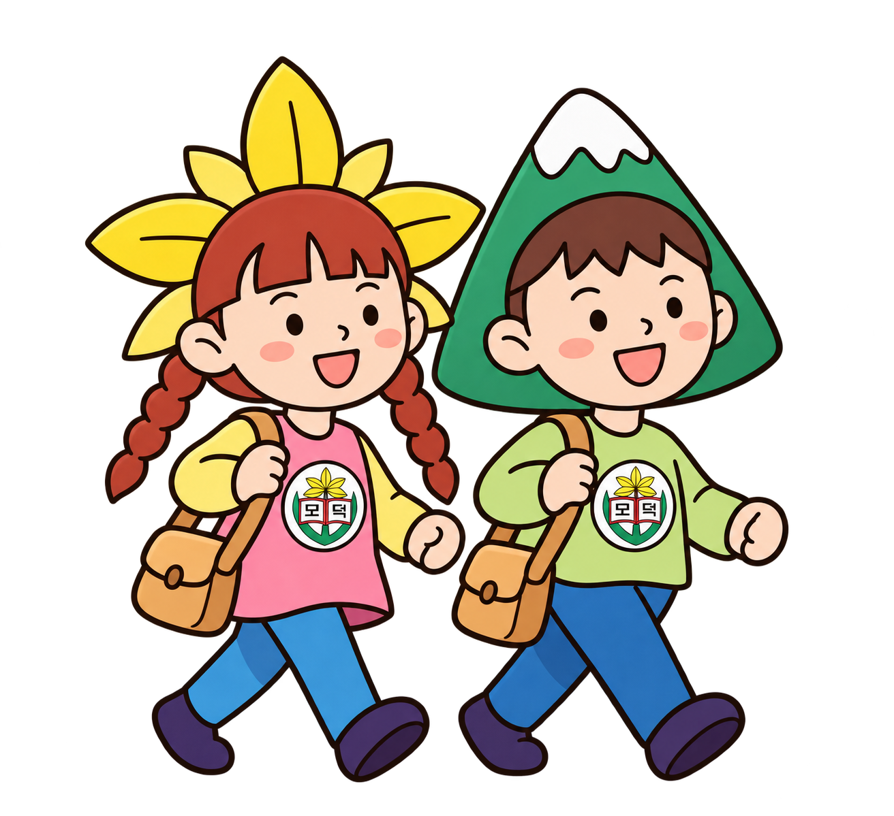

국어 6학년 2학기 · 4단원
한 걸음마다,
우리말이 꽃피다.
꽃 친구, 산 친구와 함께 떠나는 한옥마을 여행.
배움의 관문을 지나 나만의 우리말 도장을 모아 보세요.
오늘의 여행 수첩우리말 여행자
0 / 6 관문♥ ♥ ♥
여행을 시작하면 자동으로 기록해요미션을 마치면 선생님 기록장에 저장해요
우리말 한옥마을길을 따라 하나씩, 정답률 90% 이상

함께 가자!지금 도전통과한 관문아직 잠긴 관문미션 순서는 새 여행마다 달라져요